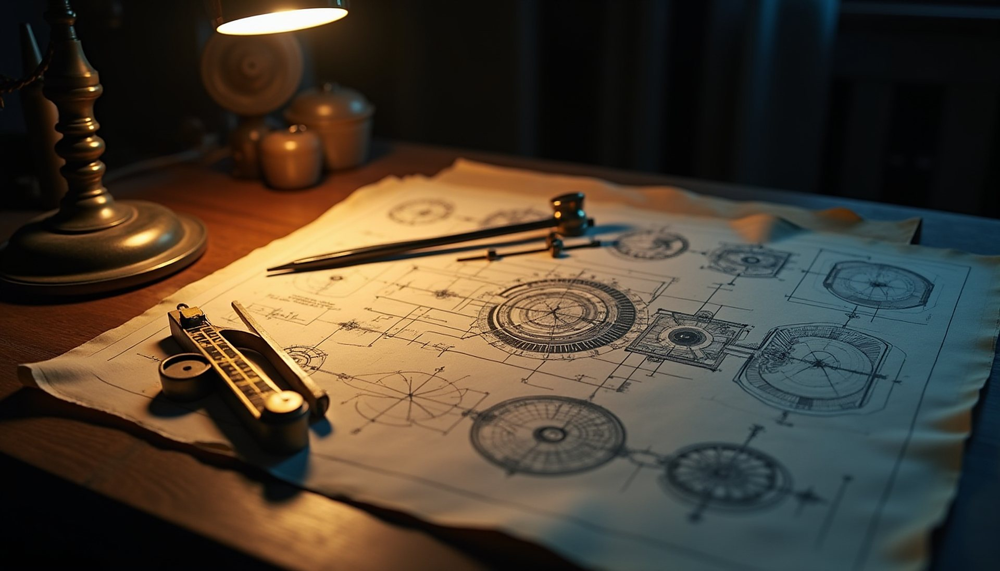
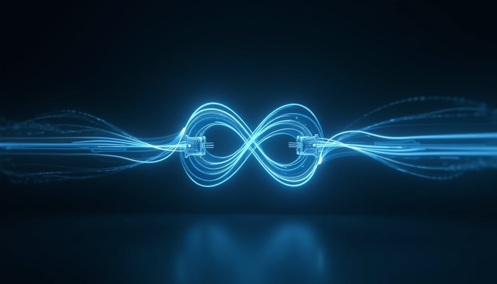
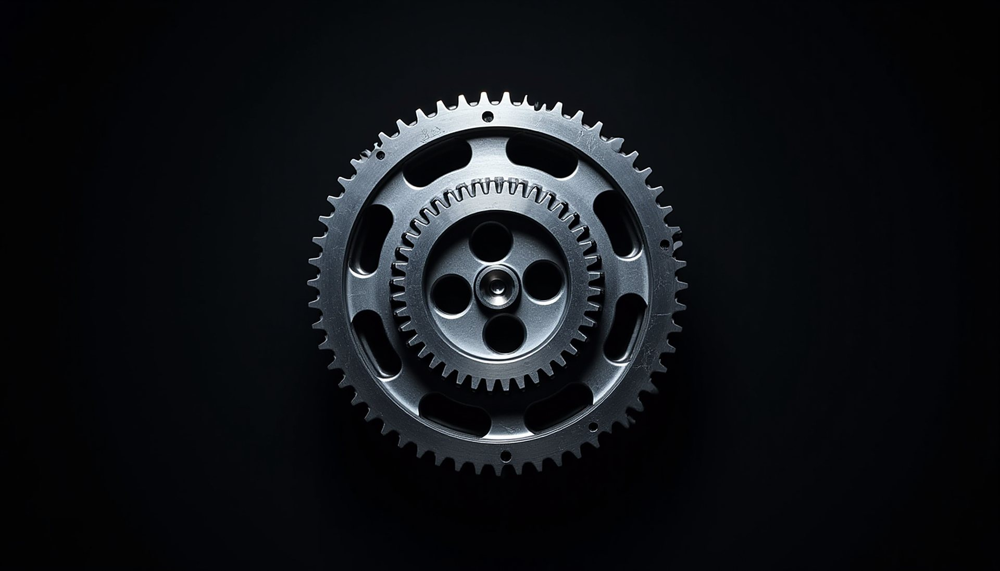
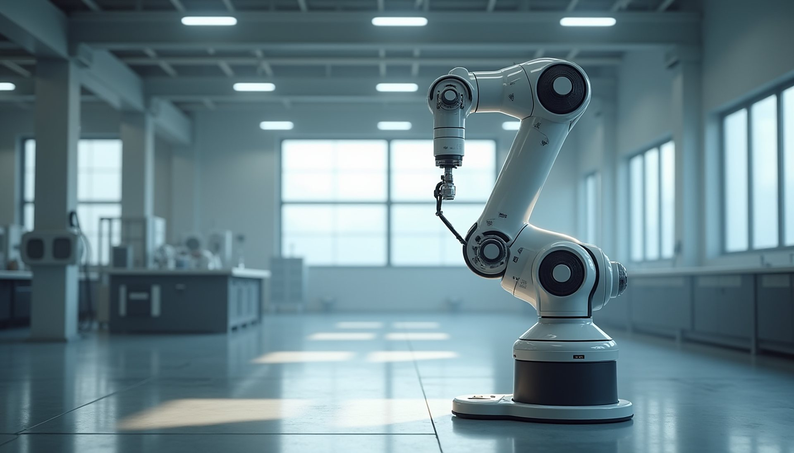
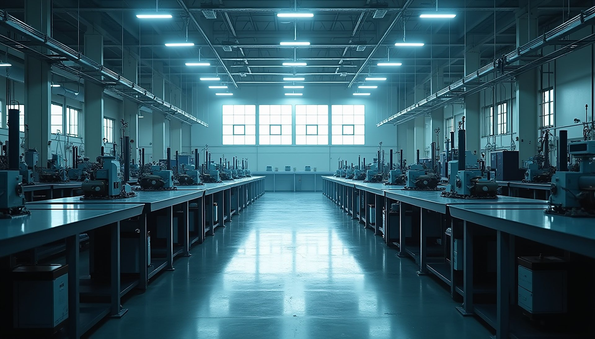
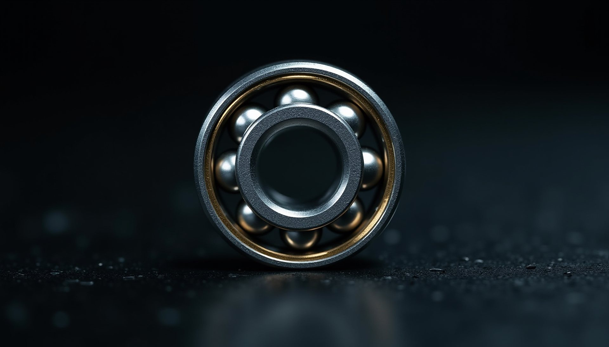
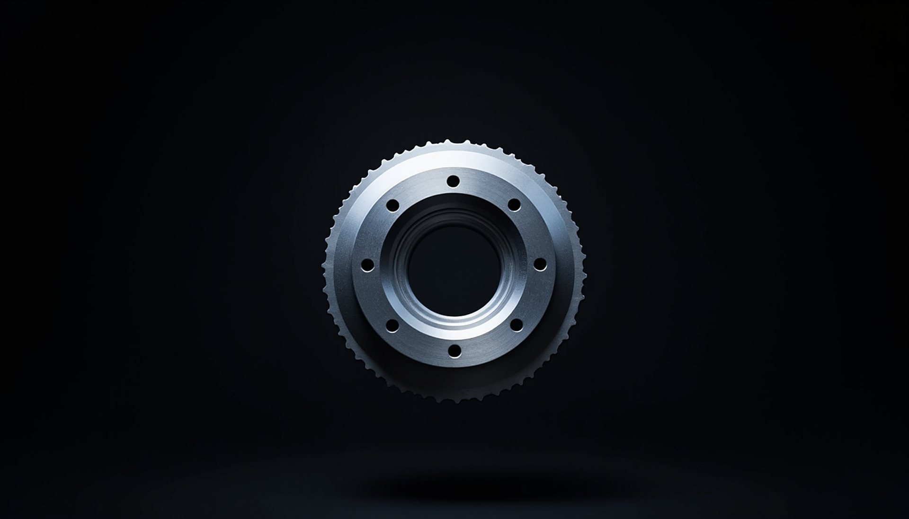
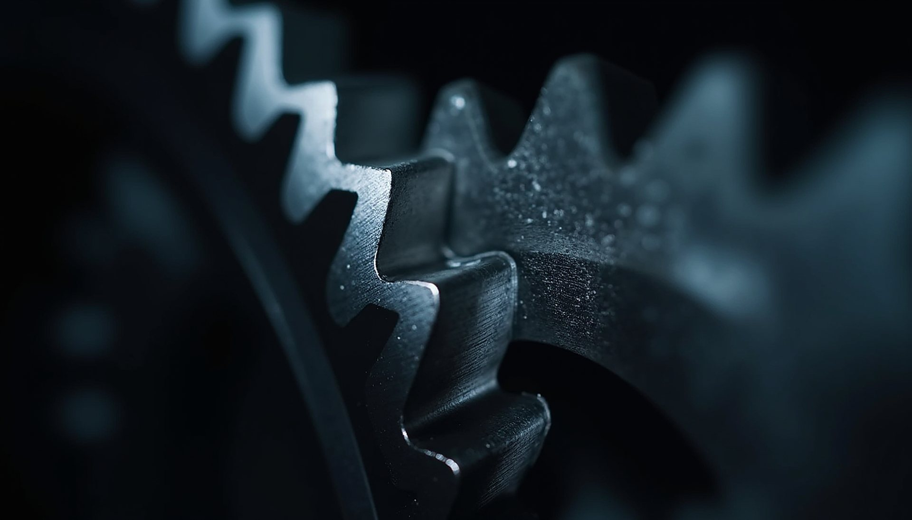

I
Синтез на механизми
Проектиране на лостови, гърбични и зъбни механизми, чиито точки следват зададени траектории и закони на движение.

Технически университет – София · Катедра

I / V
Всяка машина започва с движение. Теорията на механизмите описва как звената се свързват, за да превърнат едно движение в друго — точно и предвидимо.
II / V
Допуските се мерят в стотни от милиметъра. Анализът и синтезът на механизмите дават на конструкторите числата, преди да бъде изработена първата детайл.

III / V
Зъбните и планетните предавки променят скорост и момент. Тук геометрията става сила — в роботи, трансмисии и редуктори.

IV / V
Манипулаторите и автоматичните линии следват траектории, които инженерите проектират. Катедрата подготвя специалисти за роботиката и мехатрониката.
V / V
От 1945 година дисциплината се преподава в ТУ–София, а от 1974 катедрата е самостоятелна. Основател е проф. Михаил Константинов (1921–1991).
01Катедрата
Катедрата по Теория на механизмите и машините учи инженерите да виждат движението в основата на всяка машина — да го описват, изчисляват и проектират.
Катедрата дава на студентите знания за механичната същност на машините и развива тяхната инженерно-техническа култура и изобретателско мислене. Води 10 задължителни дисциплини, две от които в магистърски програми, и предлага две избираеми.
Преподавателите публикуват у нас и в чужбина, участват в международни проекти, работят по договори с фирми, създават патенти и изобретения. Много от разработките са внедрени в промишлеността с икономически и социален ефект.
02Атлас на механизмите
Шест класически механизма, изчислявани кинематично на всеки кадър. Променяйте параметрите и наблюдавайте как се променя поведението.
03Научноизследователска дейност

Проектиране на лостови, гърбични и зъбни механизми, чиито точки следват зададени траектории и закони на движение.

Манипулатори, паралелни структури и интелигентни задвижвания за автоматизация.

Уравновесяване, вибрации и преходни режими — по-тихи, по-леки и по-надеждни машини.

Геометрия, якост и ефективност на зъбни, планетни и циклоидни предавки.
04Обучение
Десет задължителни дисциплини, две от които в магистърски програми, и две избираеми. Студентите развиват инженерно и изобретателско мислене чрез анализ, моделиране и проектиране.
Как се описва и измерва движението на механизмите.
Натоварвания, уравновесяване и поведение на машините в движение.
Синтез на механизми по зададени траектории и закони на движение.
Роботика, автоматизация и машиностроене — от модела до практиката.
Две дисциплини в магистърски програми за по-дълбоко навлизане в областта.
05Ръководство
Ръководител на катедрата
Заместник-ръководител

06Контакти
Технически университет – София
Факултет по индустриални технологии
бул. „Св. Климент Охридски“ 8
1756 София, Блок 4